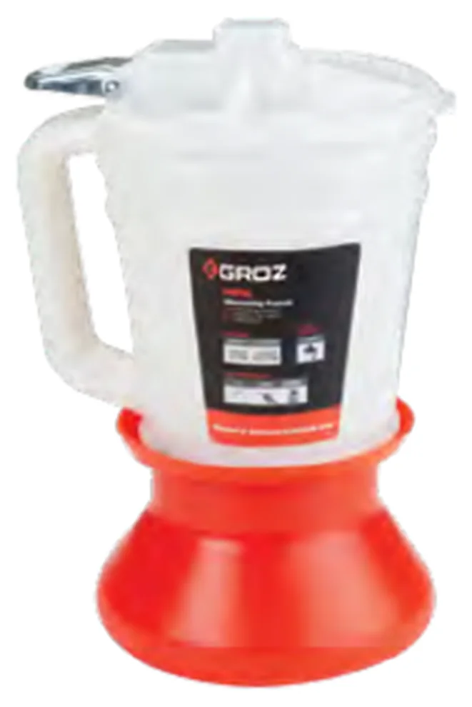

GROZ · Oiling Equipment
Measuring Funnels
CAT NR MFNL/2BC · ORD NR 41983
| CAT NR (catalogue number) | MFNL/2BC |
|---|---|
| ORD NR (order number) | 41983 |
| Box quantity | 10 |
| Description (printed in table) | Funnel with base and dust |
| Capacity (litre/us quart) | cap 2 |
Open in the catalogue The catalogue PDF, page 187
From the GROZ Fluid Handling CC-07 catalogue. Not yet verified: these details were read from the printed catalogue automatically; check the catalogue page before ordering.